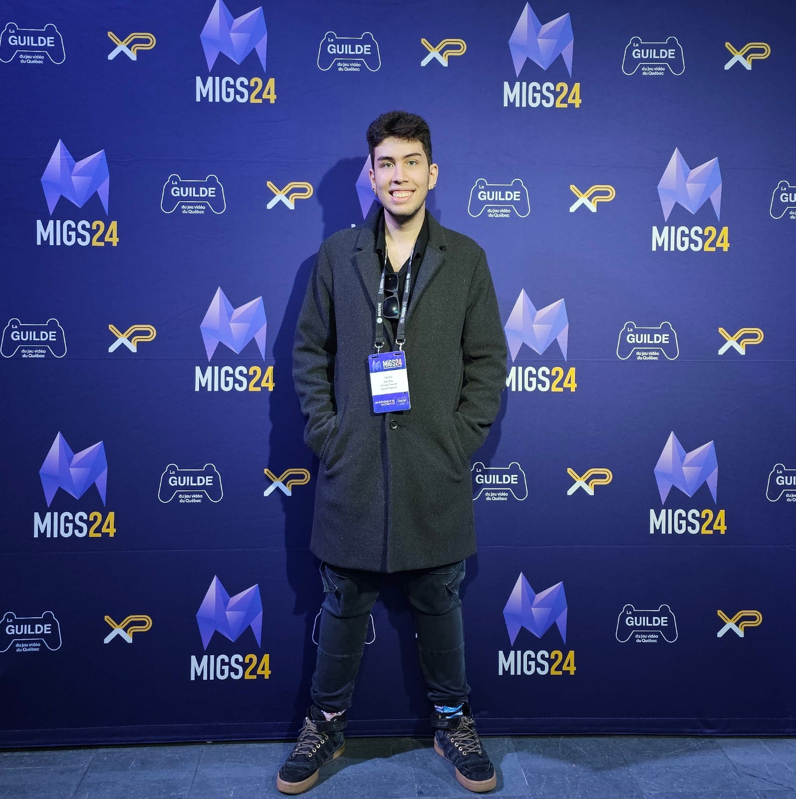

J. V. Dias
Cinema, Direção Visual e 3D
Construo imagens com intenção.
Meu trabalho transita entre cinema, 3D e direção visual, sempre com o mesmo foco: criar imagens com identidade, clareza e peso visual. O desenvolvimento de jogos consolidou minha base técnica. O cinema ampliou meu olhar narrativo e minha relação com composição, luz e atmosfera. A produção de conteúdo trouxe experiência prática em sets, campanhas e entregas profissionais.
Este portfólio reúne projetos que nascem dessa interseção entre linguagem, construção visual e execução.
Experiência
Gerencio a presença digital e a produção de conteúdo das redes de Ana Maria Braga — da estratégia de campanhas e anúncios à coordenação de equipes de mídia.
Atuei no marketing dos jogos Breach the Abyss e Electrifye — de materiais de pitch a apresentações em palco em eventos como CNE e XP. Coordenei parcerias com publishers, organizei showcases e representei a empresa para clientes, investidores e mídia.
Tutoria individual para estudantes de Game Development — suporte técnico, orientação de pipeline e acompanhamento de projetos.
Formação
Habilidades
Cinema & Audiovisual
Direção de fotografia, operação de câmera, iluminação, decupagem, edição, pós-produção
3D & VFX
Modelagem, texturização, lighting, animação de câmera, renderização, pipeline
Ferramentas
Maya, Cinema 4D, Substance Painter, Redshift, Unity, Adobe Premiere, C#